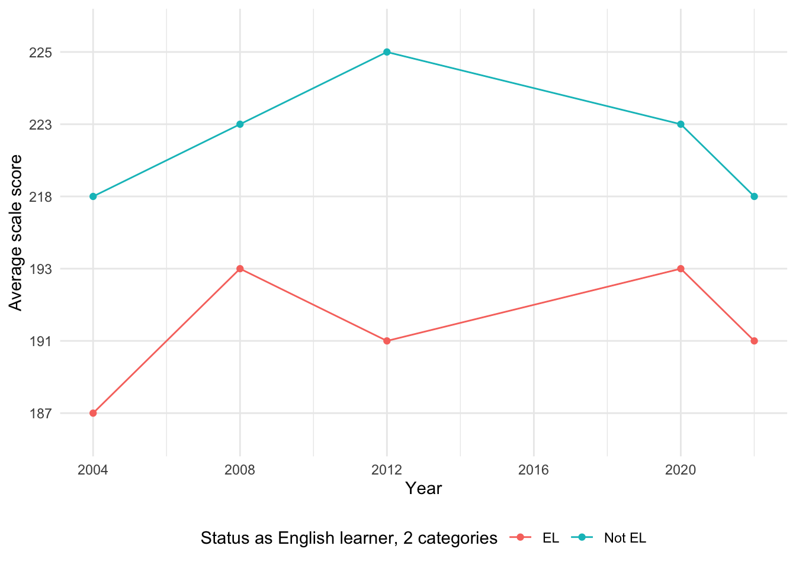

The data source we use for this project is the National Assessment of Educational Progress (NAEP). The NAEP is a federal program under the US Department of Education that administers standardized tests typically every four years to test students’ reading and mathematics skills. The data we will use for this project is collected from the results of NAEP assessments administered from 1978 onwards. As the national evaluation is typically administered every four years, the frequency of the data is every four years. The data can be downloaded in a .xls format from the NAEP website, and we will convert them to a .csv format. The data can be downloaded by all years from 1978-2022 and by any of the following variables: all students, region of the country, gender, disability status (including 504 plan), disability status (excluding 504 plan), status as an English learner, race/ethnicity, public or private school, public or nonpublic school, National School Lunch program eligibility, and school location. For this project, we will focus on the following demographic variables: region of the country, gender, disability status, status as an English learner, race/ethnicity, National School Lunch program eligibility, and school location. Because the data can only be downloaded by one variable at a time, we will have to import separate CSV files for each of these datasets and then join them. We also know that data for all these demographics is not available for all years, so we anticipate narrowing the scope of our project in terms of time.
disability <-read_csv("data/mathematics/Mathematics, Age 9, Disability sta.csv", show_col_types =FALSE, name_repair ='minimal')colnames(disability) <- disability[8, 1:4]disability <- disability[9:18, 1:4] |>mutate(Year =ymd(Year, truncated =2L))ggplot(disability, aes(x = Year, y =`Average scale score`, colour =`Disability status of student, including those with 504 plan`)) +geom_point() +geom_line(aes(group =`Disability status of student, including those with 504 plan`)) +scale_x_date(breaks =as.Date(paste0(seq(2004, 2024, 4), "-01-01")), date_labels ="%Y") +theme_minimal() +theme(legend.position ="bottom")
Code
#Missing values in the Mathematics Disability datasetdisability <-read_csv("data/mathematics/Mathematics, Age 9, Disability sta.csv")
Year
0
Jurisdiction
0
Disability status of student, including those with 504 plan
0
Average scale score
18
Code
total_missing_disability <-sum(is.na(disability))print(paste("Total number of missing values in the disability dataset:", total_missing_disability))
[1] "Total number of missing values in the disability dataset: 18"
The data appears to be collected roughly every four years. However, data in 2016 is missing for the disability category here, as well as in most of the other categories. The data begins being recorded in 2004. There are no records prior to that year either due to insufficient reporting standards or not being available.
There appears to be missing data in 2016 in the gender category as well. There is also a vertical segment in the Male timeseries which is due to a transition from an “original” exam to a new exam version. The vertical segment reflects recorded values for the two versions of the exam in the same year. The scores for Female students were equivalent in both versions, so there is no vertical segment in that particular line graph.
Other than 2016, there is no missing data set throughout 1978-2022. The fact that data is available for over four decades suggests that gender data is likely a critical component of the dataset and historically it has been prioritized compared to other metrics.
2.2.1.3 National School
Code
national_school <-read_csv("data/mathematics/Mathematics, Age 9, National School.csv", show_col_types =FALSE, name_repair ='minimal')colnames(national_school) <- national_school[8, 1:4]national_school <- national_school[9:26, 1:4] |>mutate(Year =ymd(Year, truncated =2L))ggplot(national_school, aes(x = Year, y =`Average scale score`, colour =`National School Lunch Program eligibility, 3 categories`)) +geom_point() +geom_line(aes(group =`National School Lunch Program eligibility, 3 categories`)) +scale_x_date(breaks =as.Date(paste0(seq(2004, 2024, 4), "-01-01")), date_labels ="%Y") +theme_minimal() +theme(legend.position ="bottom")
Code
#Missing Values in Mathematics National School Datasetnational_school <-read_csv("data/mathematics/Mathematics, Age 9, National School.csv", show_col_types =FALSE, name_repair ='minimal')colnames(national_school) <- national_school[8, 1:4]national_school <- national_school[9:50, 1:4] |>mutate(Year =ymd(Year, truncated =2L))national_school <- national_school|>mutate(across(where(is.character), ~na_if(., "—"))) missing_values_national_school <-sapply(national_school, function(x) sum(is.na(x)))print(missing_values_national_school)
Year
0
Jurisdiction
0
National School Lunch Program eligibility, 3 categories
0
Average scale score
24
Code
total_missing_national_school <-sum(is.na(national_school))print(paste("Total number of missing values in the national school dataset:", total_missing_national_school))
[1] "Total number of missing values in the national school dataset: 24"
Again we see vertical segments due to the transition between exam versions, and we also see missing data in 2016. Once again, data prior to 2004 is unavailable in this dataset resulting in 24 missing values in the Average Scale Score column.
This graph also contains vertical line segments at year 2004, as well as missing data in 2016. Another interesting thing to note here is the special character, which signifies that the reporting standards were not met, at the bottom of the y-axis. This primarily affects the Unclassified and American Indian or Alaska Native students.
Code
#Missing Values for Mathematics Race Data race <- race|>mutate(across(where(is.character), ~na_if(.,"‡")))missing_values <-sapply(race, function(x) sum(is.na(x)))print(missing_values)
Year Jurisdiction
0 0
Race/ethnicity (6 categories) Average scale score
0 17
Code
total_missing <-sum(is.na(race))print(paste("Total number of missing values in the dataset:", total_missing))
[1] "Total number of missing values in the dataset: 17"
region <-read_csv("data/mathematics/Mathematics, Age 9, Region of the.csv", show_col_types =FALSE, name_repair ='minimal')colnames(region) <- region[8, 1:4]region <- region[9:37, 1:4] |>mutate(Year =ymd(Year, truncated =2L))ggplot(region, aes(x = Year, y =`Average scale score`, colour =`Region of the country`)) +geom_point() +geom_line(aes(group =`Region of the country`)) +scale_x_date(breaks =as.Date(paste0(seq(2004, 2024, 4), "-01-01")), date_labels ="%Y") +theme_minimal() +theme(legend.position ="bottom")
Code
#Missing data for Mathematics Region Datasetregion <-read_csv("data/mathematics/Mathematics, Age 9, Region of the.csv", show_col_types =FALSE, name_repair ='minimal')colnames(region) <- region[8, 1:4]region <- region[9:78, 1:4] |>mutate(Year =ymd(Year, truncated =2L))region <- region |>mutate(across(where(is.character), ~na_if(., "—"))) |>mutate(across(where(is.character), ~na_if(., "‡")))missing_values_region <-sapply(region, function(x) sum(is.na(x)))print(missing_values_region)
Year Jurisdiction Region of the country
0 0 0
Average scale score
46
Code
total_missing_region <-sum(is.na(region))print(paste("Total number of missing values in the region dataset:", total_missing_region))
[1] "Total number of missing values in the region dataset: 46"
Here we see the same missing data patterns as before: vertical segments at 2004, missing data in 2016, and reporting standards not met for the DoDEA International region of the country. We also have N/A score data for years prior to 2004.
ggplot(disability_r, aes(x = Year, y =`Average scale score`, color =`Disability status of student, including those with 504 plan`)) +geom_point() +geom_line(aes(group =`Disability status of student, including those with 504 plan`)) +scale_x_date(breaks =as.Date(paste0(seq(2004, 2024, 4), "-01-01")), date_labels ="%Y") +theme_minimal() +theme(legend.position ="bottom")
Year
0
Jurisdiction
0
Disability status of student, including those with 504 plan
0
Average scale score
2
Code
total_missing_disability_r <-sum(is.na(disability_r))print(paste("Total number of missing values in the disability_r dataset:", total_missing_disability_r))
[1] "Total number of missing values in the disability_r dataset: 2"
Just like the mathematics data, data is missing for 2016 for the disability variable and for most other variables. Other than that, data is collected roughly every four years, with the exception of data in 2022 after 2020. We assume a national assessment was conducted in 2022 to evaluate student learning during the pandemic.
The 2004 data appears in two forms: one marked as valid and another flagged as ‘Original assessment format.’ The flagged data has missing scores (noted as ‘‡’), likely due to differences in assessment methodology during a transition year. This analysis includes only the standardized scores for 2004 and excludes flagged data to maintain consistency.
Once again, there is data for every 4 years starting from 2004, with the exceptions of missing 2016 data and data in 2022, just two years after data was collected for 2020. The dataset does not include any flagged entries indicating that reporting standards were met for all listed years.
Year
0
Jurisdiction
0
National School Lunch Program eligibility, 3 categories
0
Average scale score
30
Code
total_missing_lunch_program_r <-sum(is.na(lunch_program_r))print(paste("Total number of missing values in the lunch program dataset:", total_missing_lunch_program_r))
[1] "Total number of missing values in the lunch program dataset: 30"
Again, starting every 4 years from 2004, data is only missing for 2016.
This data includes 30 flagged entries (-) from 1971-1999, indicating that information is not available. These were excluded from the analysis.
Year Jurisdiction
0 0
Race/ethnicity (6 categories) Average scale score
0 15
Code
total_missing_race_r <-sum(is.na(race_r))print(paste("Total number of missing values in the race dataset:", total_missing_race_r))
[1] "Total number of missing values in the race dataset: 15"
Similar to the graph for mathematics data for race, the special characters indicating missing values appear at the bottom of the y axis. Data is missing again 2016. There are 15 missing score entries in this dataset, mainly (‡) values. These are most commonly seen for “American Indian or Alaska Native” and “Unclassified” categories, likely due to insufficient sample sizes.
Year Jurisdiction Region of the country
0 0 0
Average scale score
56
Code
total_missing_region_r <-sum(is.na(region_r))print(paste("Total number of missing values in the region dataset:", total_missing_region_r))
[1] "Total number of missing values in the region dataset: 56"
Interestingly here, the ‘DoDEA International’ category has fully missing data, as we can see from the special character on the y axis mapping to that category for every year. As this is also the case for the mathematics data, including this cateogory will probably not be helpful in our analysis. Data for 2016 is missing again.
The dataset contains two types of missing values for the Average scale score column: the special characters “—” and “‡”. Both represent missing data and are not included in the analysis.
Year Jurisdiction
0 0
School location, 4 categories Average scale score
0 48
Code
total_missing_location_r <-sum(is.na(location_r))print(paste("Total number of missing values in the location dataset:", total_missing_location_r))
[1] "Total number of missing values in the location dataset: 48"
Unlike some previous variables, data for this variable is missing for 2004 as well as 2016. There are 48 missing values in the Average scale score column starting for earlier years including 1971-2004. #### Status as English Learner
ggplot(english_status_r, aes(x = Year, y =`Average scale score`, color =`Status as English learner, 2 categories`)) +geom_point() +geom_line(aes(group =`Status as English learner, 2 categories`)) +scale_x_date(breaks =as.Date(paste0(seq(2004, 2024, 4), "-01-01")), date_labels ="%Y") +theme_minimal() +theme(legend.position ="bottom")

Code
#Missing data in Reading english status datasetenglish_status_r <-read_csv("data/reading/NAEP_EnglishStatus.csv", show_col_types =FALSE, name_repair ='minimal')english_status_r <- english_status_r[8:40, ]colnames(english_status_r) <-as.character(english_status_r[1, ])english_status_r <- english_status_r[-1, ] |>mutate(Year =ymd(Year, truncated =2L))english_status_r <- english_status_r|>mutate(across(where(is.character),~na_if(., "—"))) |>mutate(across(where(is.character), ~na_if(., "‡")))missing_values_english_status_r <-sapply(english_status_r, function(x) sum(is.na(x)))print(missing_values_english_status_r)
Year Jurisdiction
0 0
Status as English learner, 2 categories Average scale score
0 22
Code
total_missing_english_status_r <-sum(is.na(english_status_r))print(paste("Total number of missing values in the English Status dataset:", total_missing_english_status_r))
[1] "Total number of missing values in the English Status dataset: 22"
Data is missing only for 2016. A total of 22 missing average scale score values exist in the dataset, and these gaps mostly correspond to earlier years where data might not have been reported or was unavailable.
Overall, the data availability across these datasets is generally strong, with most datasets exhibiting consistent reporting over multiple years. Missing values are typically encountered in earlier years suggesting that data collection methods or reporting standards may not have been as consistent in those periods.
Some datasets, like the gender or region datasets, show almost complete data coverage, while others (e.g., the 2016 year in some datasets) have isolated instances of missing values. In general, the data is reliable for trend analysis, though attention must be given to specific years or categories with missing values to ensure proper handling in analyses.